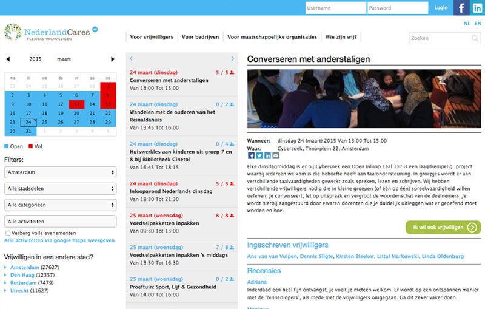
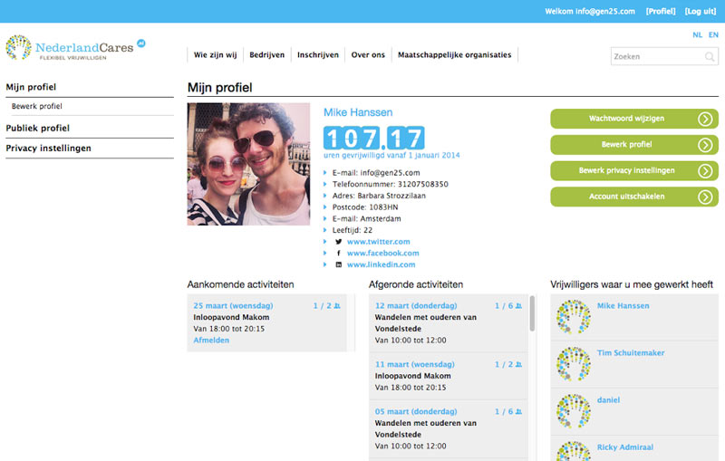

Nederland Cares App Uses Heroku, Heroku Connect, and Salesforce to Accelerate Volunteer Engagement
Nederland Cares Helps Recruit Short-Term Volunteers for Dutch Non-Profits
Giving back is an ideal for many people around the world. Helping those in need or those less fortunate is a basic human instinct that all societies strive to nurture in their citizens. But with the demands of modern life, especially for the busy professional, it can be extremely difficult to find the time for additional commitments. How can one squeeze volunteer activities into an already full schedule? Social service organizations today face a significant challenge in recruiting volunteers who can help provide the essential manpower that serves their mission.
Turning Awareness Into Action
Nederland Cares, a non-profit organization in the Netherlands, aims to fill this gap. They wanted to make it easier for people to find short-term volunteer opportunities that fit their schedule. The group’s mission is to raise social awareness and involvement, particularly in the young professional segment, in order to strengthen community ties and promote social values across generations. Nederland Cares also targets companies who want to encourage volunteerism in their employees, as well as help fund specific activities or clients. High-profile corporate partners include Tommy Hilfiger, Vodafone, Siemens, and more.

Real-Time Recruitment on Heroku
In order to deliver their vision, Nederland Cares needed an app on the front end that could offer a simple, fast user experience for volunteers. On the backend, they needed a powerful CRM system for their own staff to manage volunteer opportunities and their recruiting service. The organization partnered with development house Gen25 to help them design and build a custom solution on Heroku that would replace an ineffective, and highly manual legacy system.
With Salesforce at the core, Gen25 used Force.com to build a robust CRM system and admin interface for managing volunteer, client, and activity data. Using Heroku Connect, data flows seamlessly between the Heroku front-end web app and the Force.com backend — ingesting volunteer signups and posting activity information, registered participants, and other real-time data. Nederland Cares staff also uses campaign tools in Salesforce to send relevant emails to activity participants, such as updates or the latest opportunities and client news.
Salesforce provides us with better insight into who are volunteers are and how we can best motivate them to do volunteer work.
Gepke van de Laar, Financial Director, Nederland Cares
To create a beautiful web experience, Gen25 built the Nederland Cares main and city-specific web apps in Python using the Django framework. They chose FeinCMS to manage content with Heroku Postgres as their database, which allowed them flexibility to choose a plan that best suited their capacity and speed requirements. They deployed the apps to Heroku and provisioned three performance dynos to handle their expected traffic at launch. Rounding out their Heroku implementation, they chose add-ons SSL for encryption, PG Backups for database backup, New Relic APM for monitoring and troubleshooting, and Logentries for log management. During their testing phase they used the Tinfoil Security scanner and loader.io for load testing.

For our client, moving to Heroku was a relief — it just worked. No more performance issues or inefficient workflows. It lets them focus on what they do best. Manuel Lopez, Managing Partner, Gen25
App Experience
The Nederland Cares app provides a city-specific view into volunteer opportunities in the major urban areas across The Netherlands. A simple calendar interface provides a view into all the available activities, and volunteers can select when, where, and how often they want to participate. No special knowledge or skill is required, all is asked is enthusiasm and willingness to lend a hand.
Volunteers may choose from a wide range of activities, such as packing grocery bags for low-income families, making meals for the homeless, helping children with homework, or spending time with elderly patients in a nursing home. Companies can choose specific activities or clients for employee-wide volunteer action, helping to facilitate their social investment and raise visibility for their company values.
Despite today’s busy lifestyle, Nederland Cares makes it easy for urban citizens to show they care, one activity at a time.
More Stories


Have a question? Give our sales team a call: +1 (866) 278-1349.